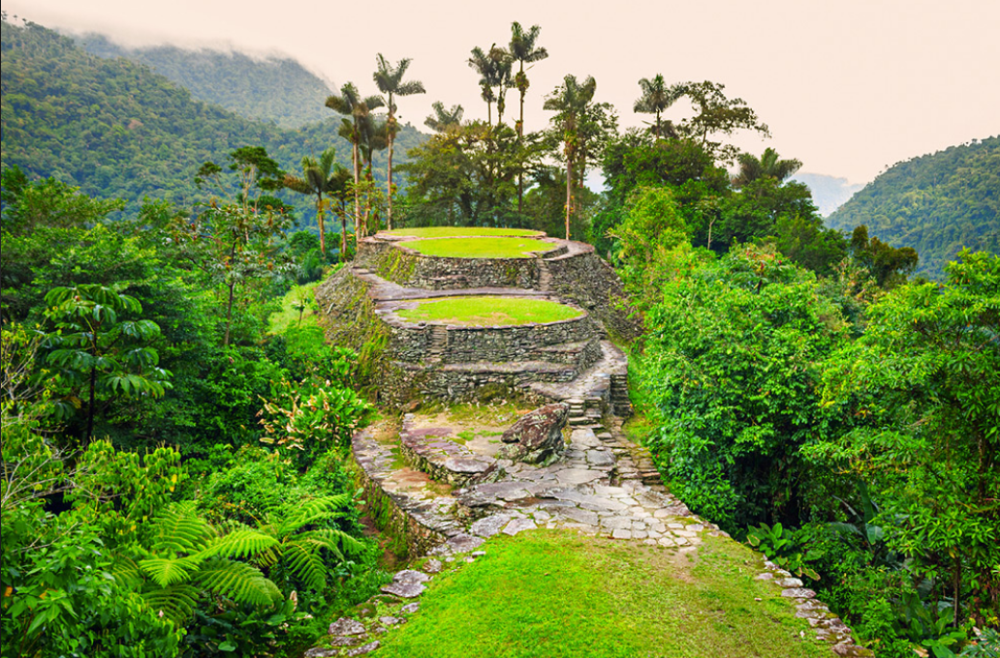
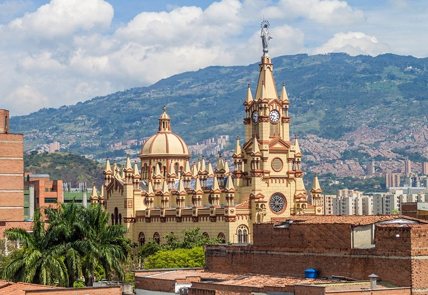
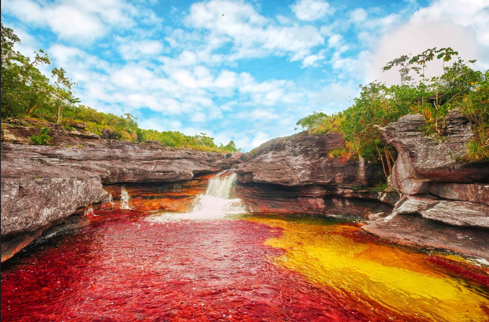
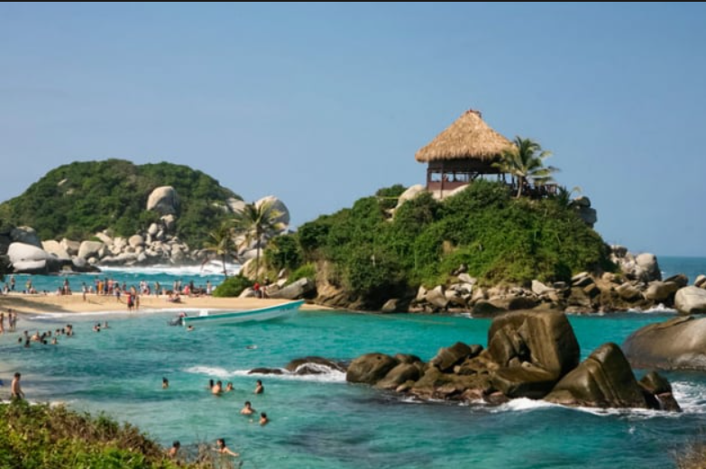
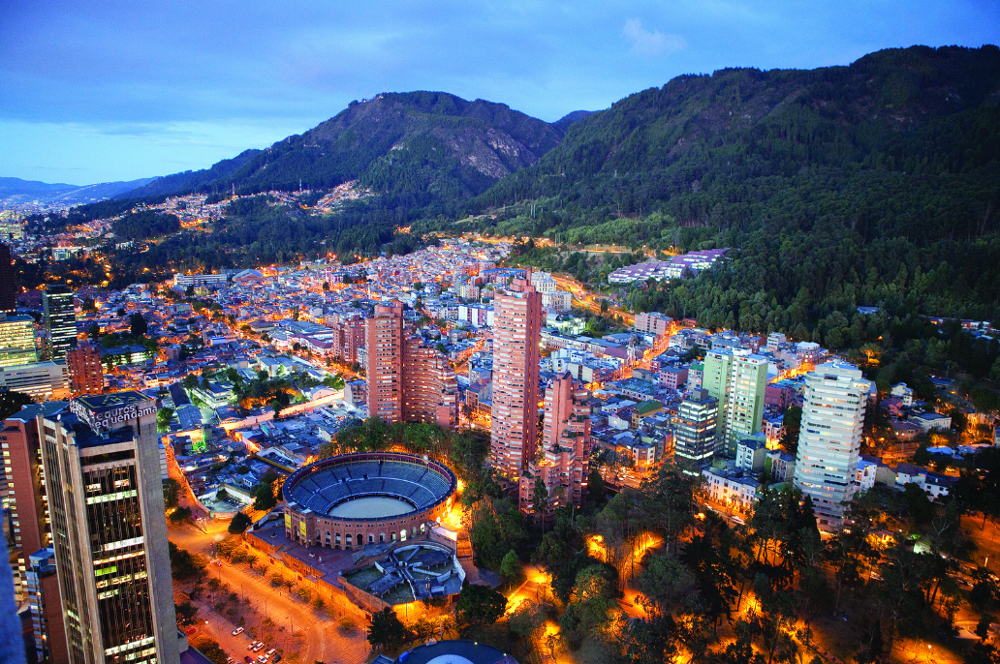
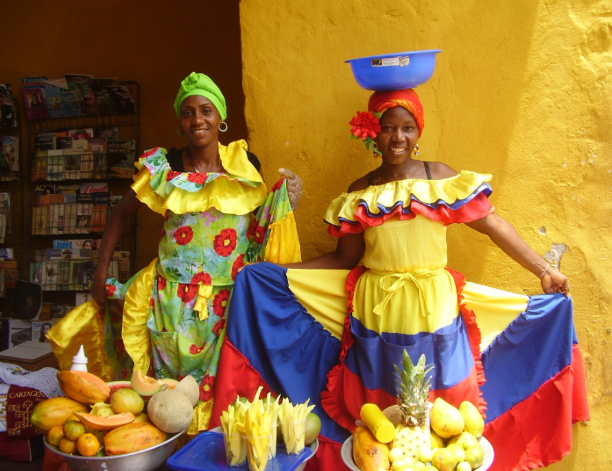
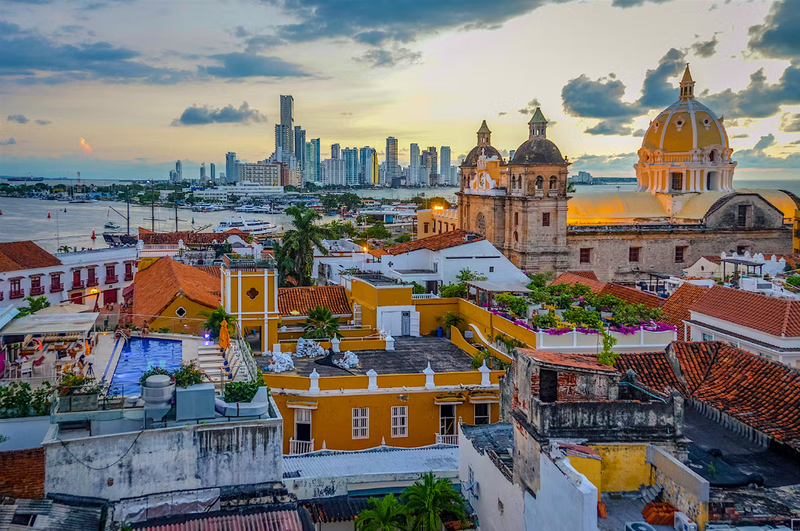

COLOMBIA
COLOMBIA
Colombia es un destino que cautiva con su impresionante diversidad y calidez única. Desde las vibrantes calles de Bogotá hasta las playas paradisíacas de Cartagena, el país ofrece una experiencia completa para todos los gustos. En la región cafetera, podrás sumergirte en el aroma de uno de los cafés más finos del mundo mientras te rodeas de paisajes montañosos que parecen sacados de un sueño. Si eres amante de la aventura, la Sierra Nevada de Santa Marta y el Parque Nacional Natural Tayrona te invitan a explorar sus senderos, cascadas y playas vírgenes. La riqueza cultural de Colombia se refleja en sus festivales, como el Carnaval de Barranquilla, y en la amabilidad de su gente, que hace que cada visita sea una experiencia cálida y memorable.
Además de su belleza natural y cultural, Colombia es un paraíso para los entusiastas de la gastronomía. La comida colombiana, con sus sabores únicos y platos tradicionales como la bandeja paisa y el arepa, es un verdadero festín para el paladar. Cada región del país tiene sus propias especialidades, ofreciendo una rica diversidad culinaria que encantará a los foodies. No te pierdas la oportunidad de disfrutar de la vibrante vida nocturna en ciudades como Medellín, conocida por su energía contagiosa y su innovador ambiente urbano. Viajar a Colombia es sumergirse en una tierra de contrastes maravillosos, donde cada rincón cuenta una historia y cada momento se convierte en un recuerdo inolvidable.










Carnavales:
.
Carnaval de Barranquilla Es reconocido como Patrimonio Cultural Inmaterial de la Humanidad y es uno de los festivales más grandes de Colombia, celebrando música, danza y disfraces.
🎭 Carnaval de Negros y Blancos Este carnaval, celebrado en Pasto, resalta la diversidad cultural de Colombia, incorporando tradiciones indígenas y africanas. source
🎉 Festival de la Cultura Wayúu En La Guajira, este festival exalta las tradiciones de la comunidad indígena Wayúu a través de danzas, música y gastronomía. source